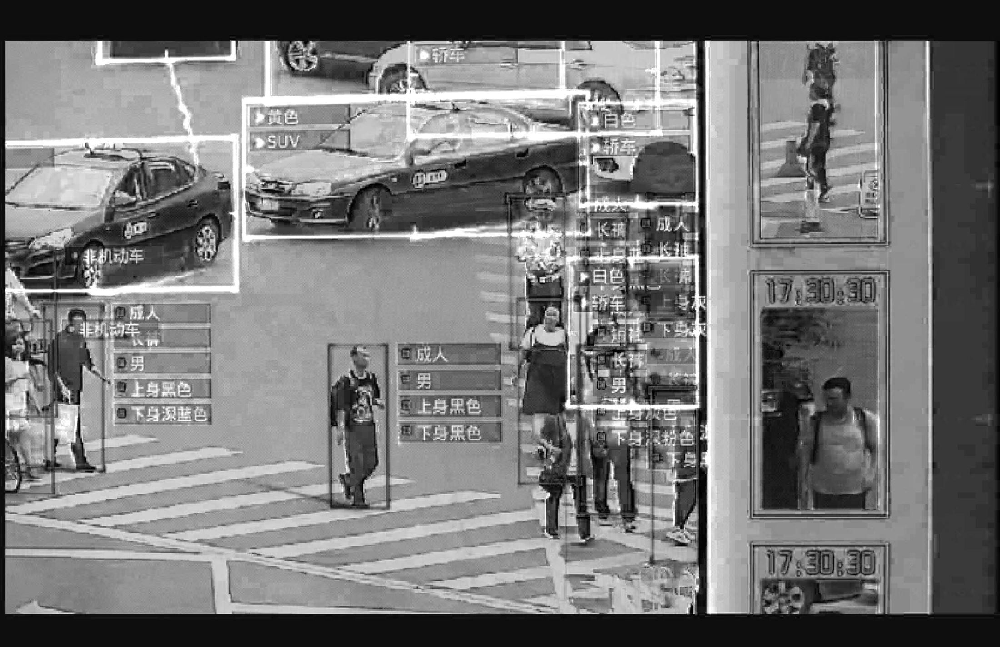
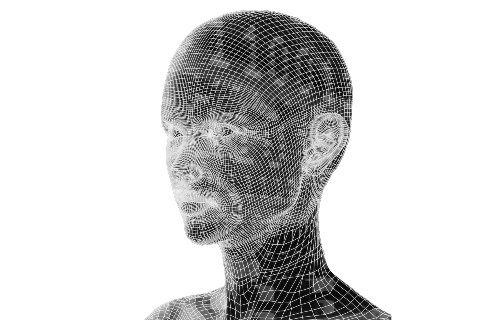

MY-KEY
MY-KEY

As one might expect, the developments of facial recognition technologies have spurred an onslaught of parallels with a means to track and monitor the in-flow and out-flow of individuals and identify people. This technological system of monitoring is well established in China, acting as a psychological 'nudge’ that manipulates society's behaviours, a persuasive means to 'act' morally or otherwise face the consequences.
How much freedom is there if society finds itself forever under surveillance? The MY-KEY artefact is a satirical play on access to transport and commuting of a user. What if our ability to ride or utilise public transport was based on our social score? Who gains access? Who gets denied? How would our movement be altered if our face was to dictate our dailiy lifestyle?
